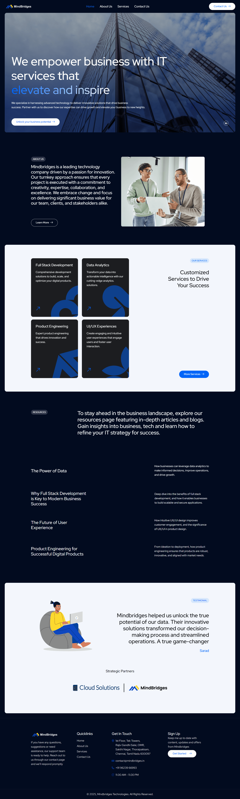

Homepage design and WordPress development for MindBridges global consulting.
WordPress | Photoshop
MindBridges is a global consulting and multimedia company with enterprise clients including Microsoft. Their work spans strategic consulting, creative multimedia production, and technical documentation — a breadth that is both their strength and their primary communication challenge. The homepage needed to serve as a credible first impression for enterprise decision-makers while clearly articulating the company's dual identity as both a strategic partner and a high-quality creative production house.
Companies with diverse service offerings often struggle to communicate focus and expertise simultaneously — too much breadth, and you lose the sense of specialisation that builds trust. The MindBridges homepage had to thread this needle: present the full scope of services without diluting the perceived depth of expertise in any one area. Additionally, the design needed to feel globally credible — appropriate for a company producing work for Microsoft-level clients — while being achievable within WordPress constraints.
I led the full design and WordPress development — including information architecture, visual layout, typography system, and all custom Photoshop asset creation. I also contributed to the brand identity strategy that informed the site's visual direction, ensuring the homepage was consistent with the wider brand work being developed at the same time. Working across branding, design, and technical implementation, I was the single point of ownership for the site's visual output.
The homepage opens with a confident, minimal hero that prioritises the company's positioning statement over visual noise. Services are introduced with brief, benefit-led descriptors rather than feature lists — guiding the visitor through MindBridges' value stack without overwhelming them. The visual hierarchy creates a natural flow from brand awareness to service understanding to contact, ensuring enterprise visitors can assess fit quickly. A restrained colour palette and strong typographic system give the site the tone of a premium professional firm.
Delivered a professional, brand-aligned homepage that accurately reflected MindBridges' global expertise and creative range. The site became the company's primary digital touchpoint for enterprise client engagement, supporting business development across their consulting and multimedia verticals.
